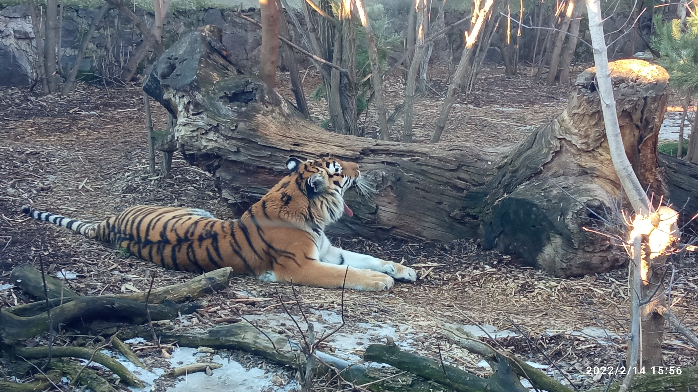
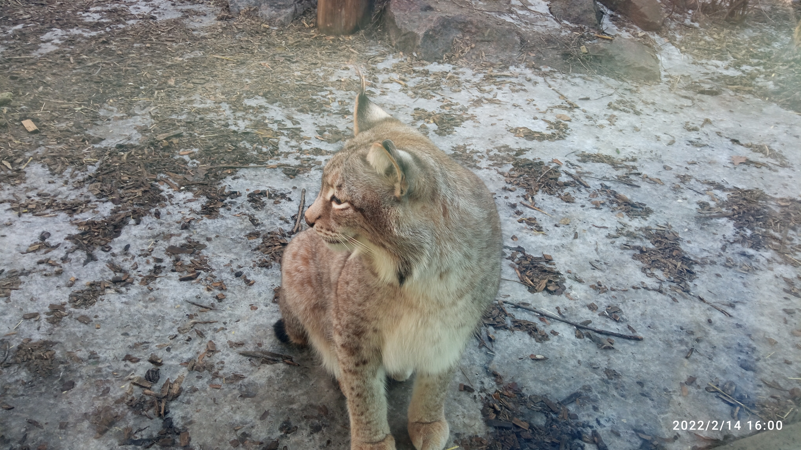
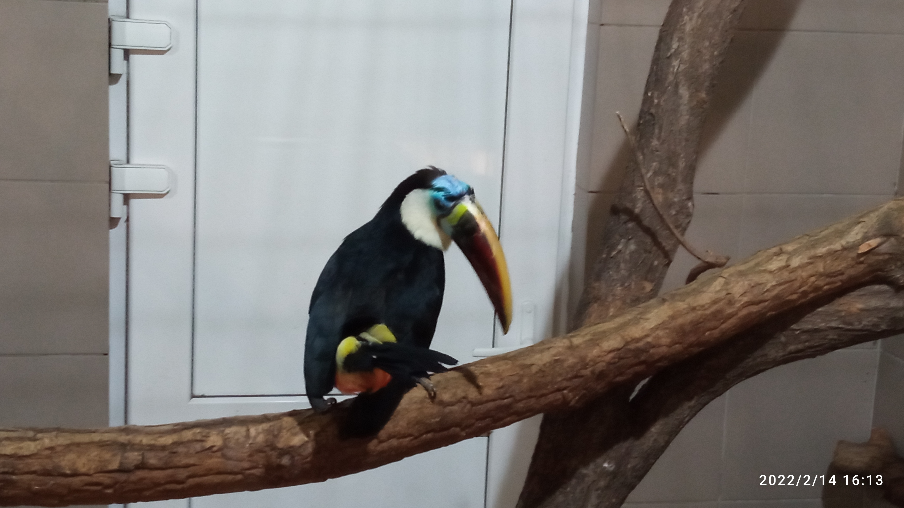

In these photos you can see some of the animals I photographed at the zoo. I don't really like this kind of place, but I can take a few photos as a memory. I believe that such places should be visited with friends, because with them you will watch not only the animals, but also the reaction of your friends. Good friends are really rare, there are few people with whom you can talk for a long time about simple things. Friends are incredible people!